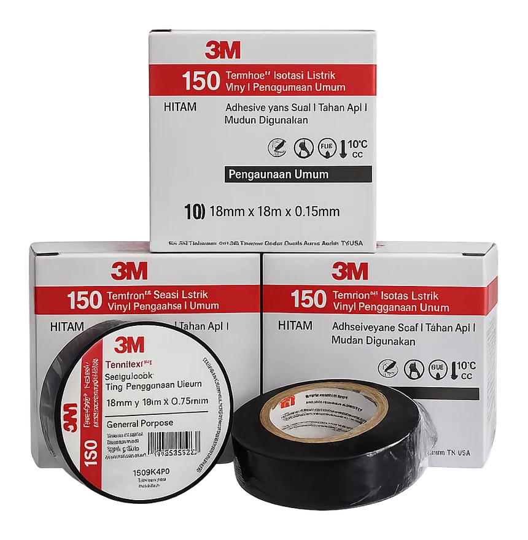

Material telekomunikasi
Rubber Vinyl Tape Set
Set rubber dan vinyl electrical tape untuk perlindungan dan finishing sambungan kabel telekomunikasi.

Spesifikasi
Rubber Vinyl Tape Set
Set rubber tape dan vinyl electrical tape untuk melapisi dan menutup sambungan kabel. Dipakai pada titik konektor agar terlindung dari air dan cuaca.
- Isi set
- Rubber tape dan vinyl electrical tape
- Warna
- Hitam
- Fungsi
- Perlindungan dan finishing sambungan
- Pemakaian
- Titik konektor, sambungan kabel outdoor
Rubber tapeVinyl tapeSet
Yang perlu dikirim untuk penawaran
- Jenis material dan jumlah
- Ukuran / panjang yang dibutuhkan
- Tipe konektor (bila ada)
- Lokasi proyek atau alamat pengiriman
Pertanyaan umum
Apakah panjang dan konektor bisa disesuaikan?
Ya. Ukuran, panjang, dan konektor menyesuaikan kebutuhan proyek Anda.
Siapa yang dilayani?
Perusahaan, kontraktor, vendor, dan pelaksana proyek BTS di Indonesia.
Bagaimana cara minta penawaran?
Sebutkan jenis material, ukuran atau panjang, tipe konektor, dan jumlah lewat formulir di halaman ini atau WhatsApp 0853-2256-5826. Tim kami membalas harga dan ketersediaan.
Minta penawaran Rubber Vinyl Tape Set
Tulis ukuran/panjang, tipe konektor dan jumlah — tim kami membalas harga dan ketersediaan.